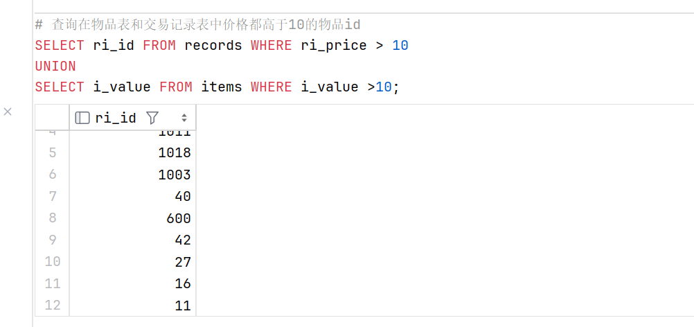
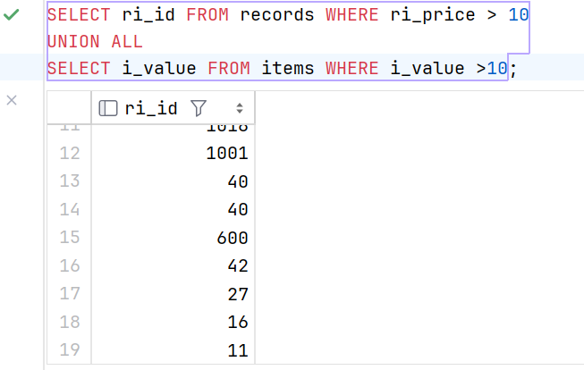

3.5 合并查询
相比较于上一章中提到的复杂查询中的连接操作，使用 UNION 可以减少匹配次数，相当于乘法转化为加法，提高效率
UNION 关键字
UNION 操作符用于合并两个或多个 SELECT 语句的结果集。
在 MySQL 中，使用 UNION 关键字需要遵从以下规则：
UNION必须由两条或两条以上的SELECT语句组成UNION的每个SELECT语句必须拥有相同数量的字段，次序可不一致UNION的每个SELECT语句合并的列字段类型必须相同 ( 可隐式转化也行 )
例子：
# 查询在物品表和交易记录表中价格都高于10的物品id
SELECT ri_id FROM records WHERE ri_price > 10
UNION
SELECT i_value FROM items WHERE i_value >10;

UNION ALL
UNION ALL 与 UNION 的区别在于，UNION ALL 将不会对合并结果进行去重，
SELECT ri_id FROM records WHERE ri_price > 10
UNION ALL
SELECT i_value FROM items WHERE i_value >10;
